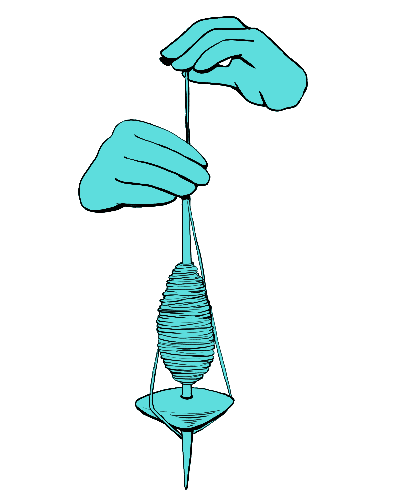
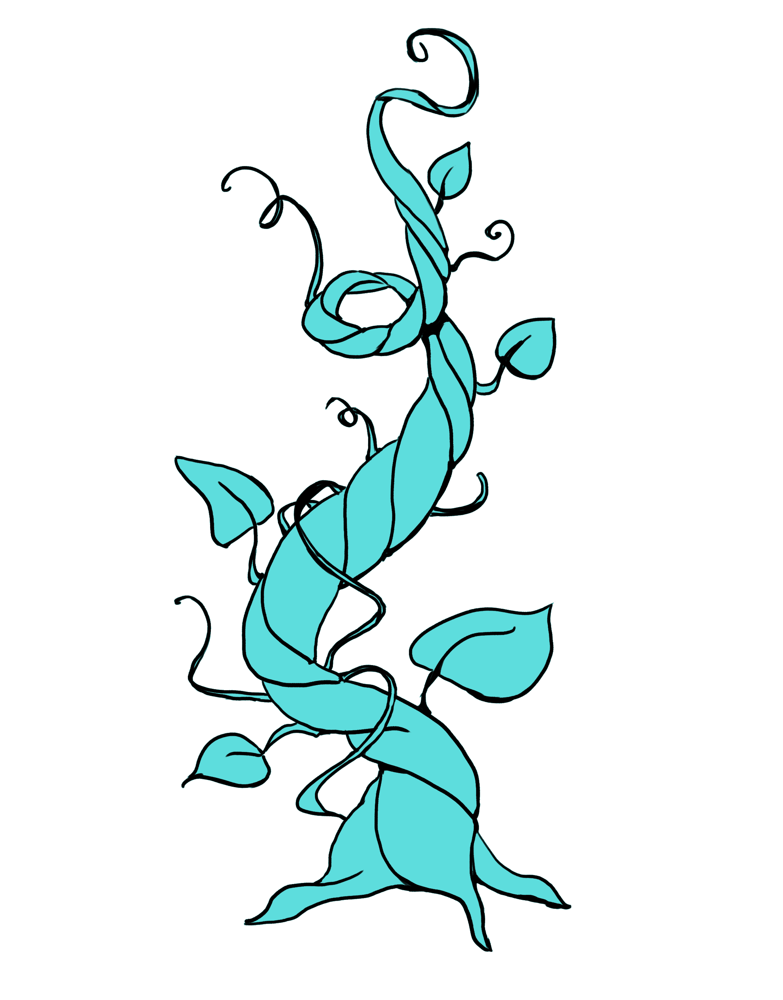
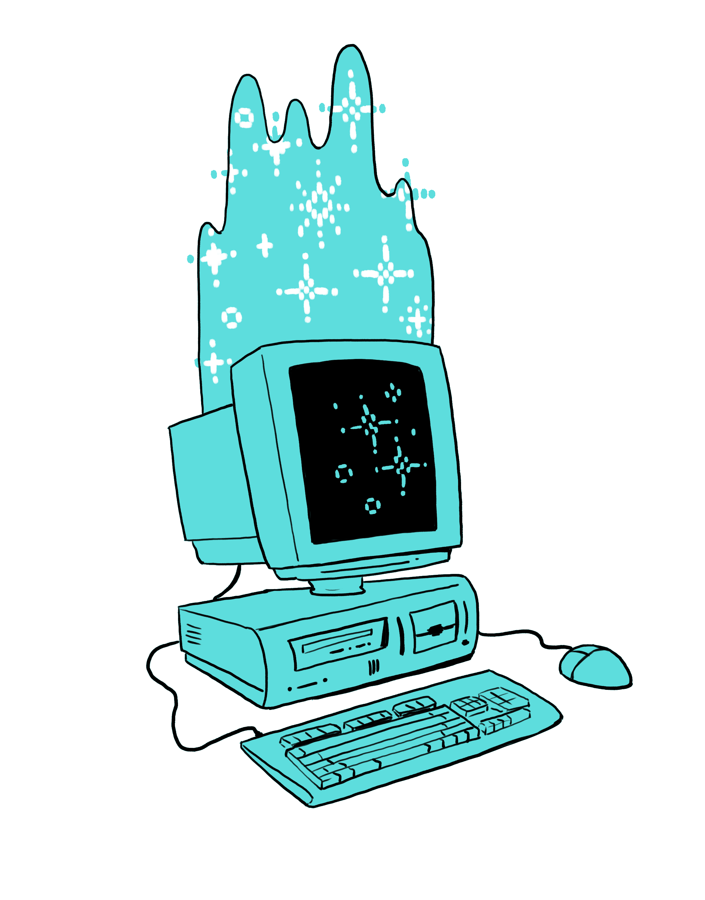
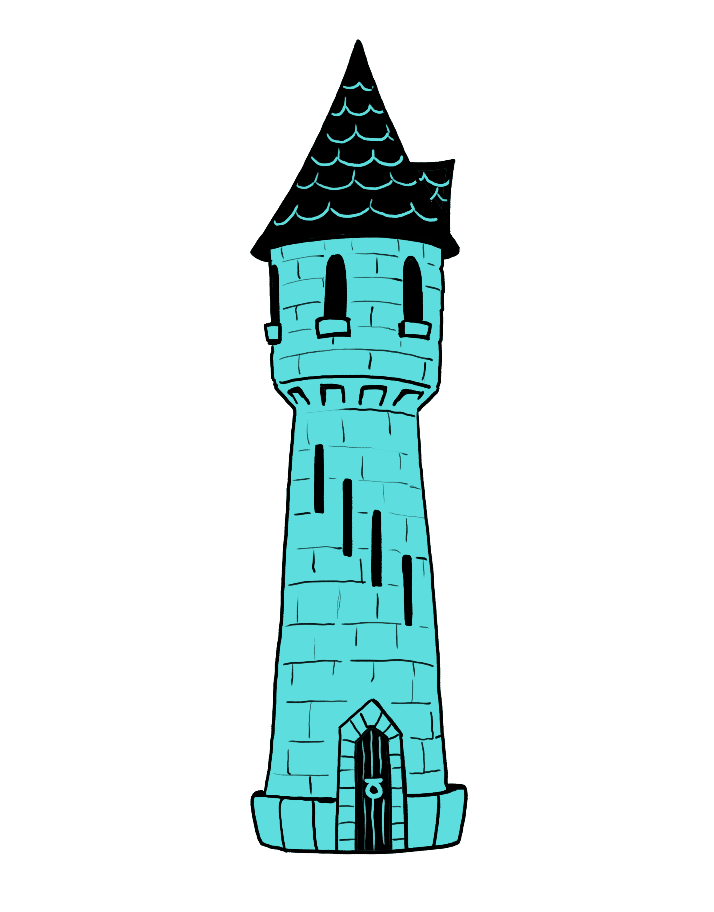

I am a PhD candidate at Indiana University in Folklore and Informatics, intending to graduate in Spring of 2026. My dissertation centers on unpacking narrative structure and genre in traditional folktales. I hope to continue to explore the intersection of storytelling, tradition, and the digital through research on narrative, wonder, and community archives.
I hold a Master's degree in Folklore and in Informatics from Indiana University, and a BA in Folklore and Mythology with a secondary in Human Evolutionary Biology from Harvard University.
You can contact me at monmmari@iu.edu
My CV is here